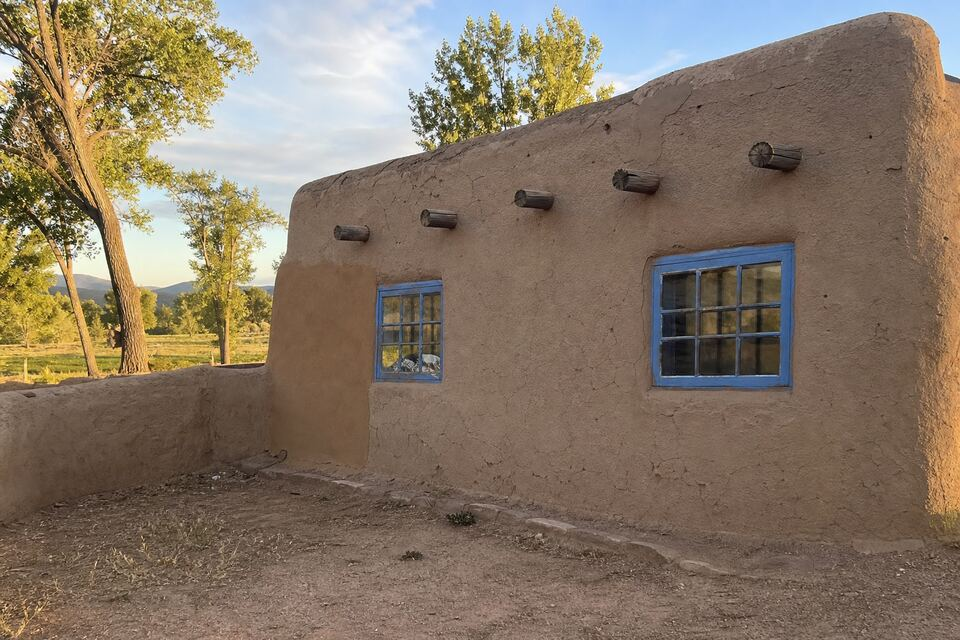

Stucco Work in Española, NM
The Española Valley holds Northern New Mexico’s deepest adobe heritage — generational homes, owner-built walls, and plaster traditions older than the highway. Cracks, parapets, color, or a full project — call (505) 416-4951 or send the form; one plain sentence about the wall is enough.

Valley walls, valley sense
Española-area work spans the valley’s real housing: generational adobes that have been in families longer than the county has kept records, owner-built and owner-added homes where three construction eras share one roofline, and newer frame-stucco builds along the corridors. The adobe rule travels here in full force — breathable lime and earth plasters, never sealing coats — and so does respect for the valley’s own plaster knowledge; plenty of these walls were maintained beautifully by the families themselves for decades, and the work continues that tradition rather than replacing it.
Budget honesty is the other valley value. Repairs get staged when staging serves the owner — the failing wall this season, the parapet next — with straight talk about which problems can wait and which are eating the wall while they do. A mud wall caught early is an affordable repair; the same wall ignored becomes masonry work, and the visit is candid about where yours sits.
Services available in Española
The full lineup runs here as it does across the area: repair, re-stucco and color coats, new installation, and parapet and canale work — with the material guide deciding what belongs on which wall and the cost guide covering what moves the number.
Wall on your mind in Española?
Send the form with your area and what you are seeing. The look-at-it visit does the diagnosing; the written scope follows.
Questions people ask
Can repairs be staged across seasons for budget?
Yes — staging is normal valley work. The visit triages honestly: what is actively eating the wall goes first, what is cosmetic can wait its turn, and you get that list with numbers.
Our family has always mudded the walls ourselves. Can you work with that?
Gladly — earth-plaster traditions here are real expertise. Work can complement family maintenance, handle the high or structural pieces, and leave the parts you want to keep doing.
Do you serve the wider valley?
Yes — Española proper plus the surrounding valley communities; mention your area in the form and scheduling routes accordingly.